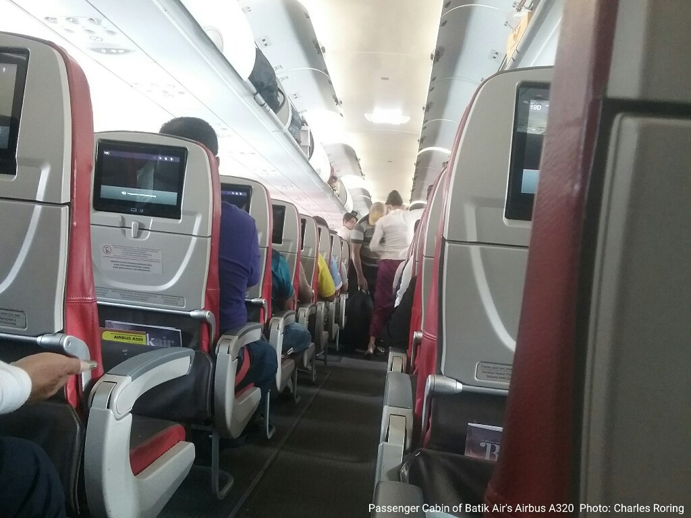
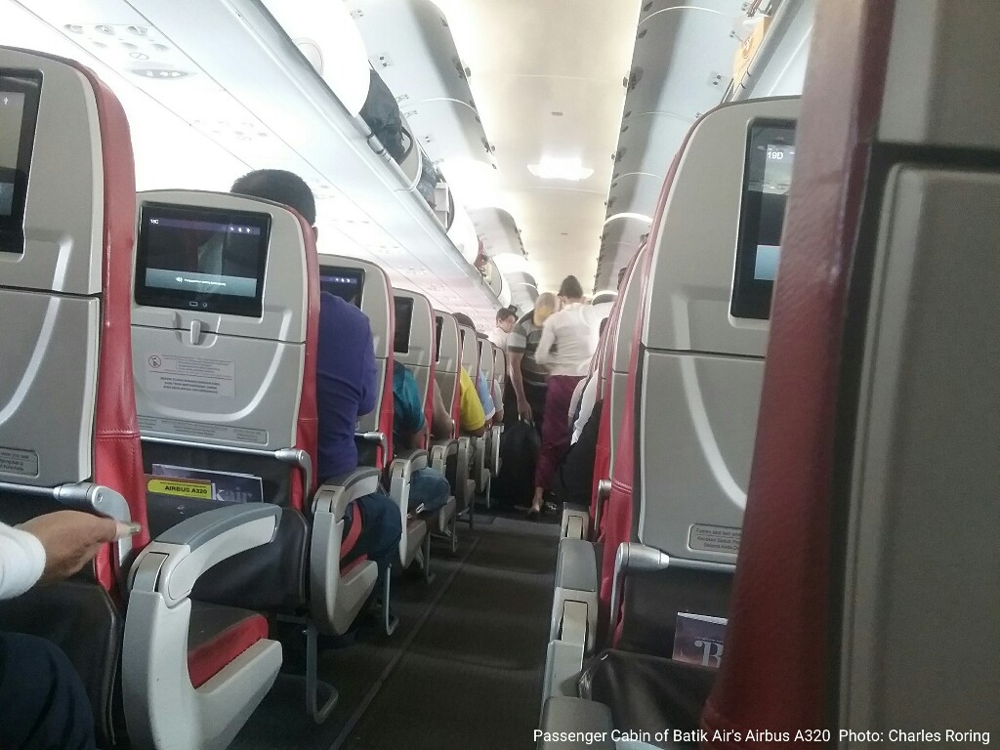
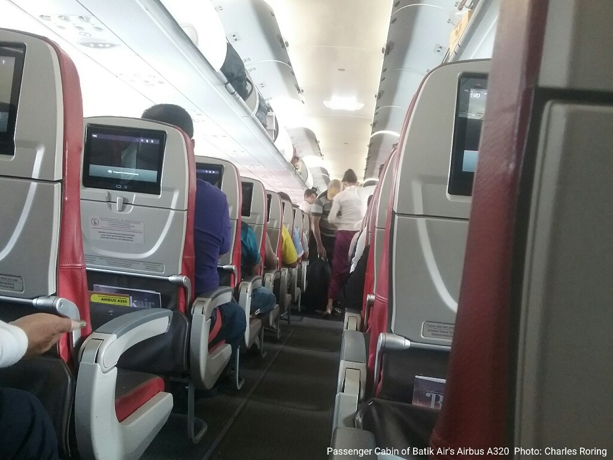

Airbus A320 of Batik Air

Airbus A320 of Batik Air
This is a picture of Airbus A320-200 operated by Batik Air. The airline operates this aircraft for flights that connect Manokwari, Sorong, Makassar and Jakarta. I sometimes travel by Batik Air to Sorong when I want to guide tourists on a birdwatching trip to Klasow valley, Tambrauw Mountains or to Raja Ampat islands. According to Wikipedia and its official website, Batik Air has got 40 aircrafts of this type powered by CFM56 jet engines. Batik Air flies to 40 destinations in Indonesia and abroad including Jakarta, Manado, Surabaya, Medan, and Denpasar. Chennai in India, Singapore, and Perth of Australia are a few international cities that the airline visits.
The Airbus A320-200 has got inflight entertainment device installed on the backside of every seat. Passenger can use it to listen to music, watch movies, read travel information and more info about the company.
Airbus A320 of Batik Air
The passenger cabin of the aircraft is clean but the space between seats is to narrow making it quite uncomfortable for passengers who sit in the window seats to reach their seats. Every passenger can enjoy inflight entertainment that is provided at the back seat. Passengers need to bring their smartphones' earphones or headsets if they want to enjoy the movies and their sounds.
Bread and a small bottles of mineral water are provided as snacks for the passengers during short flights. For long flight such as the ones between Manokwari and Jakarta or Sorong and Makassar, good lunch maybe provided by the airline.
The latest series of this type of aircraft is Airbus A-320neo meaning New Engine Option. Its main propulsion engine is Leap Engine which features 15% lower fuel consumption compared to CFM56 turbofan jet engine. The by pass ratio of CFM International Leap A is 10:1. Airbus A320 family with its fly by wire and side stick control systems is still comparable to the newest edition of Boeing 737 series. As of today the market for narrow body aircrafts is still dominated by Boeing and Airbus. Soon, they will have to compete against Russia's MC-21 that is driven by PD-14 engine and PW 1400. Another type of aircraft that is being developed by China to enter the same market is C 919.
Also read: Bombardier CRJ 1000